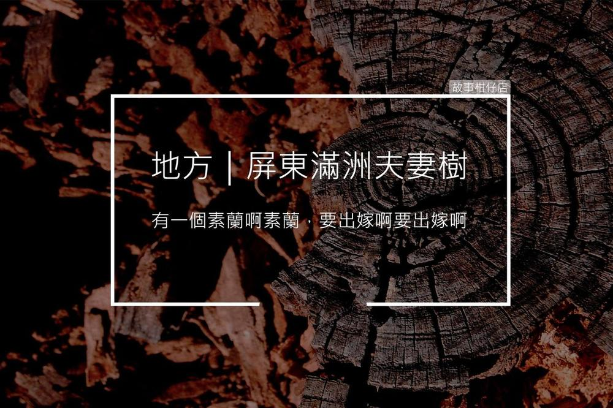

屏東滿洲：夫妻妻樹
2018-03-26

屏東滿洲鄉馬門羅山上有一對超過百年歷史的夫妻樹，據說情人只要來見夫妻樹便可白頭偕老。五年前妻樹遭颱風吹斷，滿洲鄉政府便移植一株僅20歲的木麻黃為老夫樹續弦。
〈屏東滿洲：夫妻妻樹〉
「這株好！少年擱結實！」
鄉長撫著我的背大聲讚賞，村民們簇擁上來圍著我點頭稱是。想到自己的終生大事就此落定，我害羞低下頭，幾片紅色花瓣自髮梢飄落。
兩週後，天還未亮，我便被連根拔起，腰幹綁著美麗紅緞帶，一行人將我扛起，浩浩蕩蕩往山頭出發。
他們擔著一簍牛糞充當黃金，成為我的嫁妝，一路上有人彈月琴，大夥齊聲唱著：「有一個素蘭啊素蘭，要出嫁啊要出嫁啊～」每個人歡頭喜面笑嗨嗨，我暗暗期待，也不禁忐忑，不知尪婿生得什麼款？是榕樹？還是鳳凰木？
佇立門馬羅山腳的爸媽愈來愈小，日頭已升至天頂，我望著那一片遙遠的木麻黃，心頭一陣酸。
愈接近山頭風愈狂，可別把我的紅緞帶吹散才好。迎娶隊伍的歌聲迴盪在呆風草原，低頭吃草的牛群抬頭看了幾眼，隨即又隱沒進蒼茫山徑。
「到了！到了！」帶頭敲鑼的人興奮喊道。
啊，原來是和我同種的木麻黃。
雖然枝幹健壯，枝葉還算茂密，但詳細一看，竟是已經超過百歲的老頭，當我阿公都綽綽有餘；而他四年前被風吹斷的前妻，現在只剩一截枯老樹幹留在原地。
大夥將我扶起栽在老頭身邊，用紅線圈住我倆，他前妻的殘枝就靜靜杵在我們之間。
「恭喜、恭喜！」鄉長與村民們高聲慶賀，咧開笑容高舉喜字看板與我們合照。
已經看不見山腳那片木麻黃，落山風吹得我枝葉顫動，老頭也被吹落幾朵黃花，飄零在他前妻身上。
那圈紅線勒得我直想吐，綁在腰上的緞帶鬆脫了，隨著狂風拂過這片金黃翠綠的坡地，直往山腳奔去。
每個黃昏時刻，
讓故事柑仔店
為您說說地方的故事。